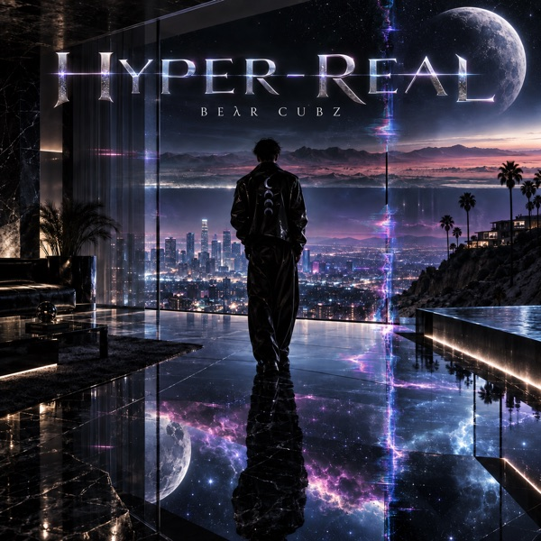
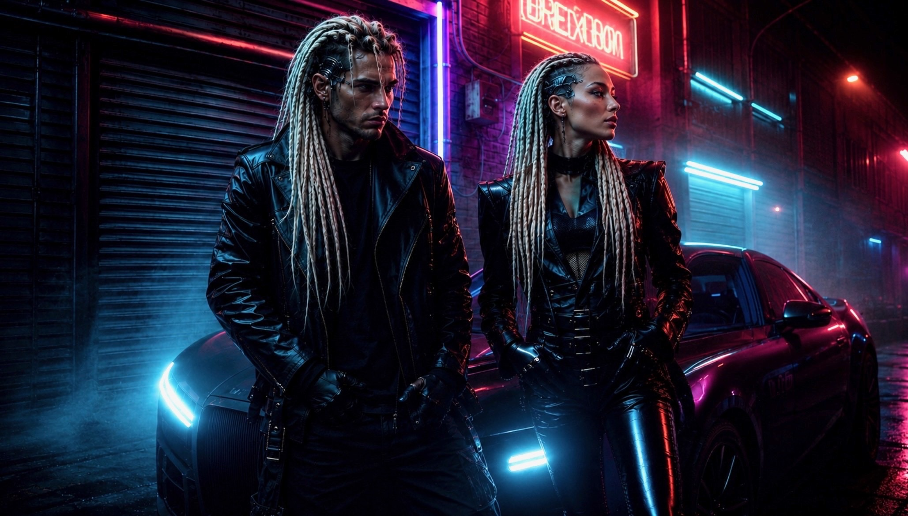
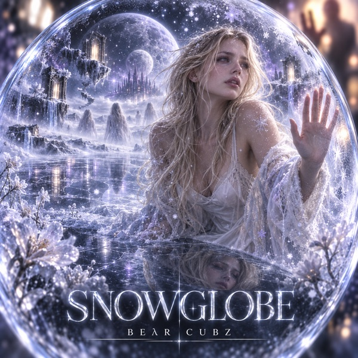
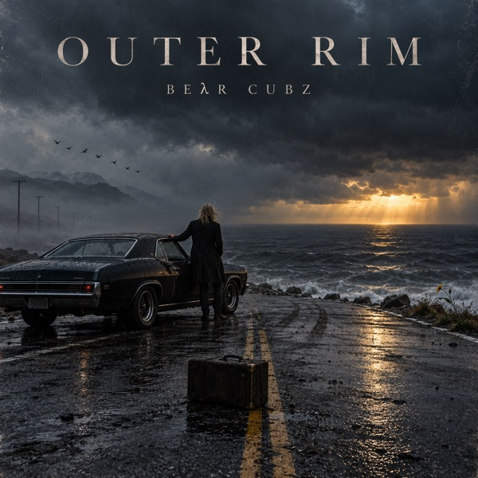
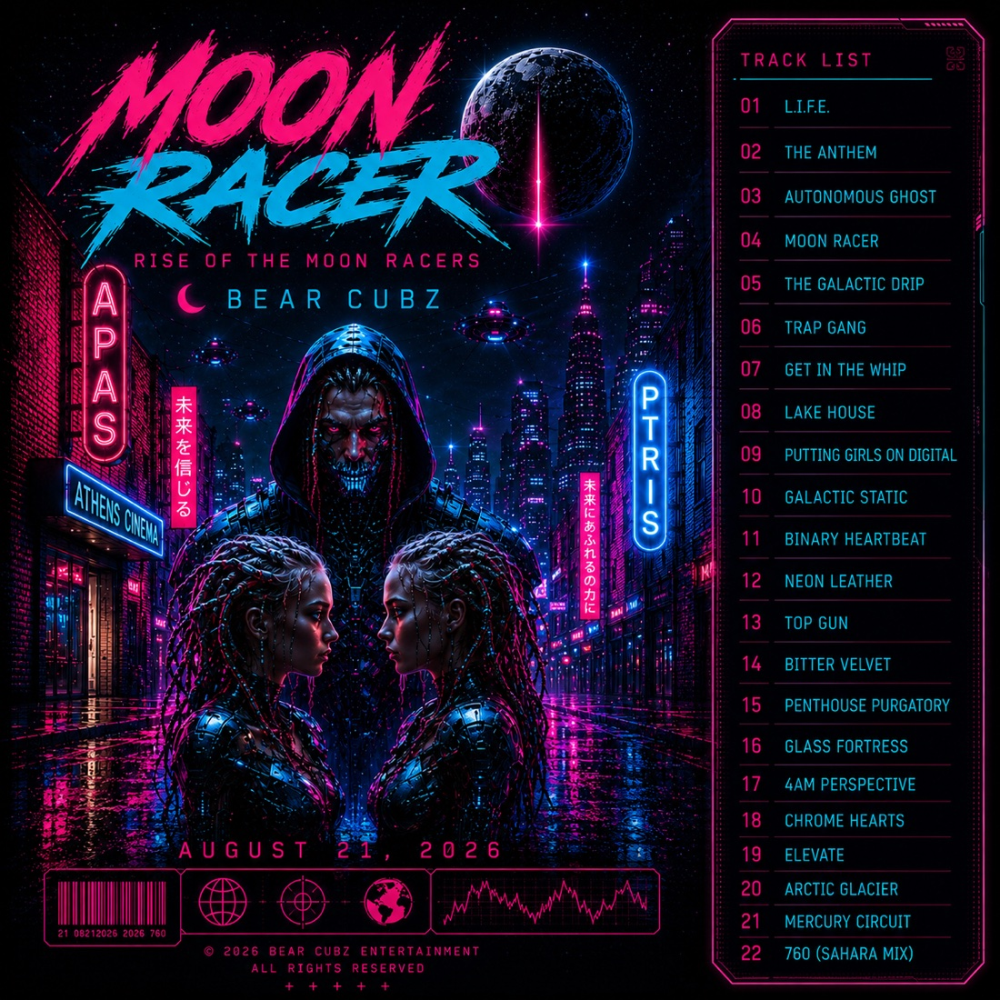
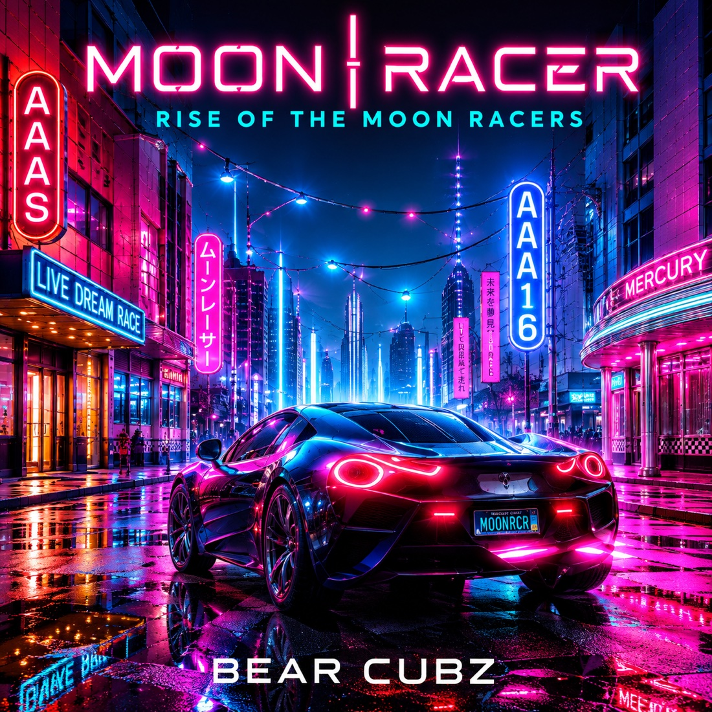
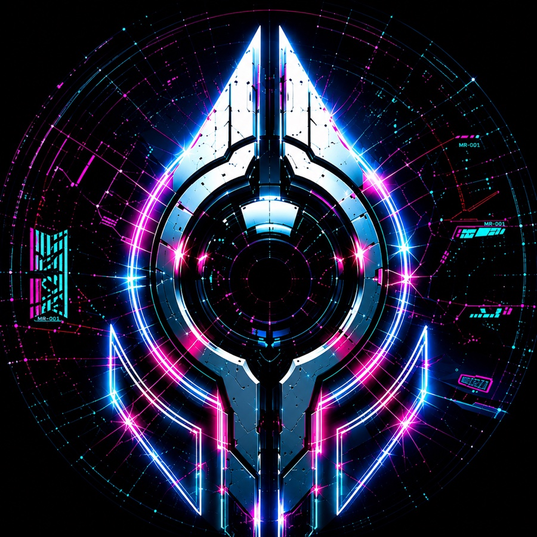

The immediate statement — impact, identity and the clearest introduction to the next BEλR CUBZ era.
0:003:43

Private Industry Package
Music is the signal. The universe is expanding.
Artist · Producer · DJ · Sound Engineer · Creative Director
A multidisciplinary music project connecting records, cinematic visual identity and an expanding interactive universe.
Sampler
Three records. Three dimensions of where BEλR CUBZ is headed next.

The immediate statement — impact, identity and the clearest introduction to the next BEλR CUBZ era.

A deeper and more atmospheric side of the project, showing emotional and cinematic range.

A different edge of the sound that broadens the possibilities without losing the BEλR CUBZ identity.
One track plays at a time · No autoplay · High-quality AAC listening copies
Profile
More than a release — a long-term creative pipeline.
BEλR CUBZ is a multidisciplinary artist, producer and creator with experience spanning music production, engineering, performance, vocal production, digital production and creative technology.
Track Record
Interactive Experience
Enter an interactive experience from the Moon Racer universe — draw from six signals, uncover messages from its characters, and discover sounds from the world.
Enter the Oracle →The World
Music at the center. A universe around it.
Moon Racer is an original music-centered science-fiction universe built around BEλR CUBZ recordings. It connects music with cinematic storytelling, original characters and worlds, live experiences, digital identities and expanding interactive experiences.
Music remains the center of the ecosystem.
Explore the Moon Racer Universe

Momentum
Early-stage figures shown as reported from artist-platform data.
The strength here is the amount of developed creative inventory and infrastructure relative to the project's early audience stage — that gap is the partnership upside.
Inventory
A partner would be joining an existing creative system — not being asked to invent one from scratch.
Partnership
BEλR CUBZ is looking for a partner capable of accelerating the recording career while respecting the creative identity that makes Moon Racer distinctive.
Documents
Mini-deck, partnership proposal, EPK / resume and streaming snapshot.

BEλR CUBZ Moon Racer